Best Foods to Have in Varanasi
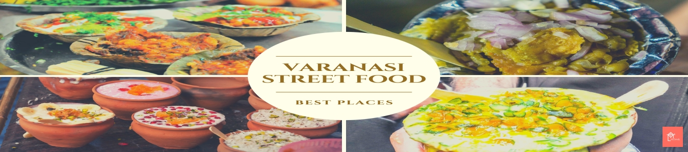
Street food in Varanasi is as elaborate as the city's history. And Varanasi is as old as time itself. Since
Aryan culture is found in the holy city, meat and beef is not that common and vegetarian cuisine is mostly
followed with some exceptions due to Muslim habitations. The food of Varanasi is influenced by nearby states
including Bihar and West Bengal, which has been given a different flavour by the locals of the city. Unless
one savours the culinary treats of Banaras, a trip is incomplete. Food is a quintessential part of the
Varanasi's culture. Being frequented by hundreds of thousands of foreign tourists throughout the year, the
city's cuisine is a spin-off between the new and the old, the modern and the old-fashioned. A few handpicked
locations and special treats will tickle your taste buds while you're in Varanasi. Here are some popular
places for Varanasi street food that you must try if you ever visit the city
1. Makhan Toast
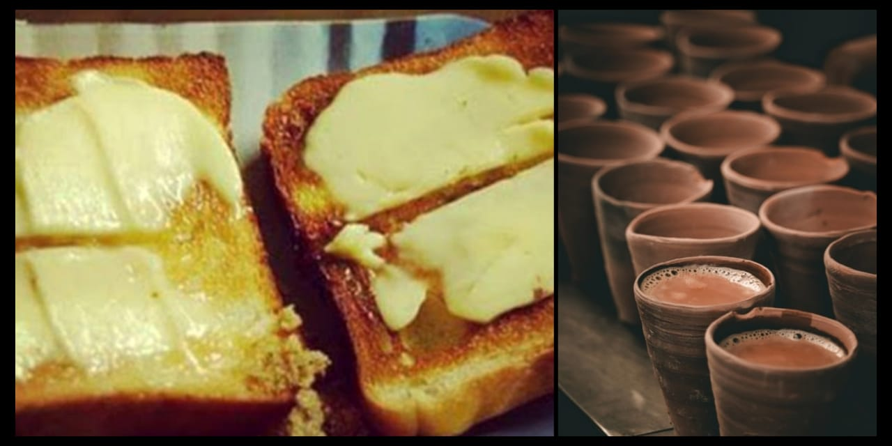
A very interesting food in Varanasi is the Safed Makhan Toast, which is essentially local bread that has
been
slathered over with ‘Makhan’ or butter. First, the bread is roasted over a coal oven and then it is covered
by a thick layer of white or yellow butter. The butter is freshly made and thick in consistency. You can
have sugar added to it or have it salty. The chai or tea concocted in this restaurant is like God’s gift
to you. The uncle- ji who prepares this broth does his job with love and care and what you get is a thick
tea that smells divine. We are sure that you will never be satisfied with just one helping of your toast and
tea.
PLACES TO EAT
Laxmi Chai Waley
Chowk
Godowlia
2.Kachori Jalebi
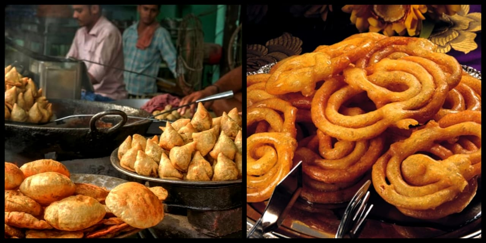
Banaras is the king of Jalebis. The jalebis or imartis (a bigger cousin of the Jalebi) are a sweet treat
too excellent to miss. Try them with rabri and you'll want to come back to Banaras for this one!
Visting Varanasi and never eating this lipsmacking food must be the biggest regret of your life.
Also one should try it with Rabri.
PLACES TO EAT:
Vishwanath Misthan Bhandaar
Ram Bhandaar
3.Banarasi Chaat
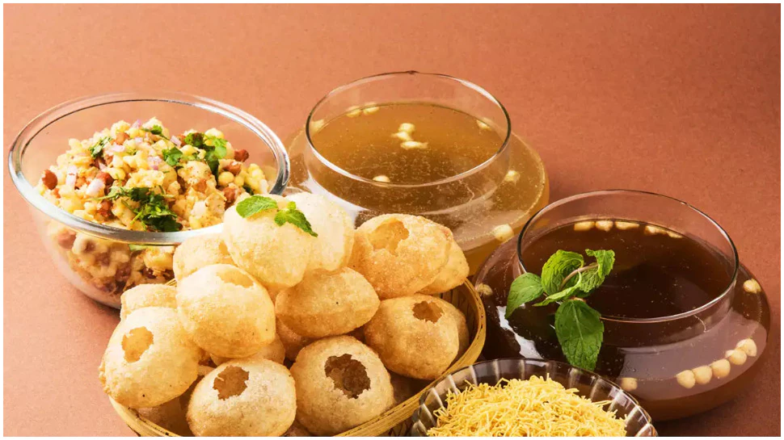
Banarasi chaat is a different types of appetizer including GolGappe,Aloo Tikki,Tamatar Chaat ,etc. are
the
sweet and spicy delight which are loved
by children and adults alike. Wafer-thin, crisp Gol Gappas are filled with a spicy mixture of boiled
potatoes and pulses and then topped with paani and other spices.
PLACES TO EAT:
Keshari Chaat corner
Deena Chaat Bhandar
Golghar
4.Paan
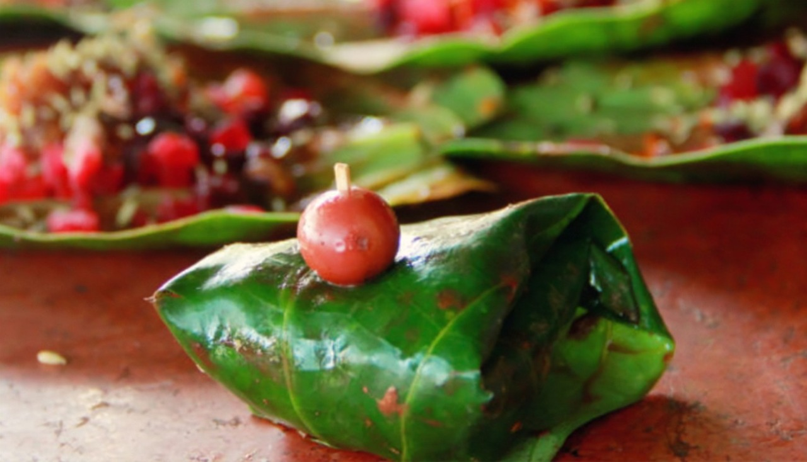
.
BanarasiyaPaan is something that you must try when in Varanasi. Paan is made from beetle nut leaves with
beetle nuts or Supari, lime and a mixture of condiments and eaten with tobacco or lime. There is also
the
Meetha Paan, a version of Paan, devoid of tobacco or lime but filled with sweetened rose petals, fennel
seeds and soft and chewy Supari.
PLACES TO EAT:
Ravidas Gate
Rajendra Chaurasia Paan
Deepak Tambul Bhandar
Dashashwamedh Ghat
5.BAATI CHOKA
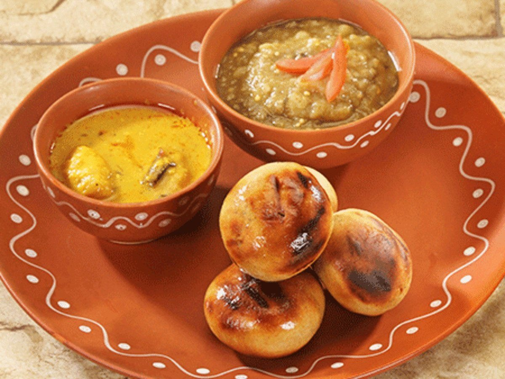
BaatiChokha, a favourite delicacy in Bihar makes for a tasty street snack in Varanasi too. Stuffed whole
wheat dough balls are stuffed with roasted chana dal and spices inside. These stuffed balls are known as
Litties and are roasted over charcoal. Litties are dipped generously in desi ghee and served with
Chokha,
which is made of a spicy mixture of boiled potatoes, tomato and eggplant
PLACES TO EAT:
Baati Choka Lanka
Puran Das Road
6.Malaiyyo - Famous Sweet of Banaras
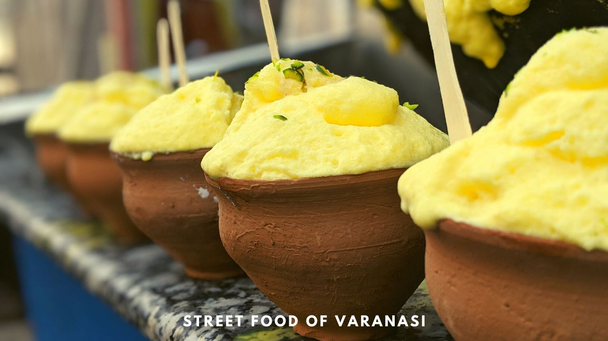
Makhan Malaiyyo or Nimish is a popular winter season street dessert in Varanasi. Influenced by Persian
cuisine, Malaiyyo is prepared by churning the milk slowly to create a creamy texture. The milk foam is
then
flavoured with saffron and cardamoms and garnished with pistachios and almonds on the top.
Extraordinarily
light and perfectly sweet, it is served in Purva or kulhads. Malayiyyo is a well-kept secret of
Varanasi,
which one can only experience while visiting this eternal city
PLACES TO EAT:
Chowkambha
Kachori Galli
Golghar
7.Thandai
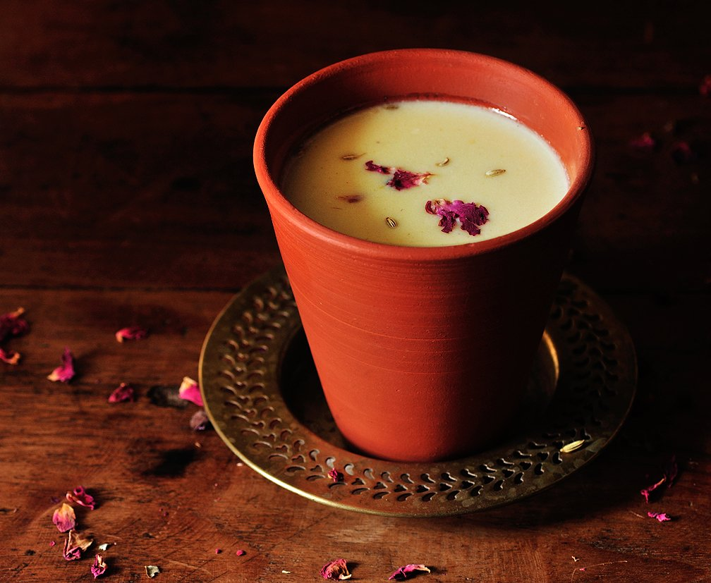
Varanasi fairs high on the production of milk and curd and thus a profound use of these items can be
found in
most of the city's preparations. BanarasiThandai is famous across India for its refreshing taste and
celebratory spirit. Made from seasonal fruit puree, Thandai is served in a kulhad topped with Rabri and
flavoured with rose essence, ice- cream, dry fruits and nuts. Condiments like fennel seeds, magaztari
seeds,
pepper, vetiver seeds, cardamom and saffron make the flavours truly rich and refreshing. People add some
quantity of Bhang in Thandai on festive occasions like Holi. Thandai in Banaras is available with the
kick
of bhang if you're up to try it. Bhang is a mix of dried leaves and buds of the female cannabis plant
that
is consumed lovingly in 'Bhole Baba ki Nagri'! Baba Thandai and Thandai Ghar are two places to root for,
at
Godowlia Chowk. These are the places to visit in Varanasi if you're craving for some fantastic thandai.
PLACES TO EAT:
Blue Lassi Shop
Varanasi Thandai Ghar
Kachauri Gali
Famous Franchises in Varanasi
KFC

McDonalds

Luxury Hotels in Varanasi
BrijRama Palace
BrijRama Palace, which stands mighty on the serene banks of Darbhanga Ghat, is one of the oldest
man-made structures in the city and is considered to be a top-tier luxury hotel in Varanasi
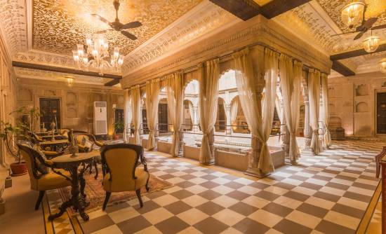
Taj Nadesar Palace
Overlooking the Ganges River and surrounded by vibrant gardens, this palatial hotel in a property
dating
from 1835 is 4 km from Vishalakshi Temple and 9 km from the Dhamek Stupa monument.
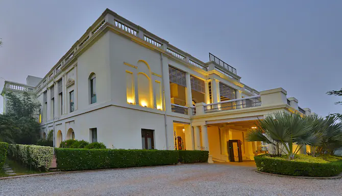
Taj Ganges
Occupying a grand building on 40 acres of landscaped gardens, this upscale hotel is 2 km from the
Varanasi Jn train station, 4 km from the landmark, riverside Kashi Vishwanath Temple .
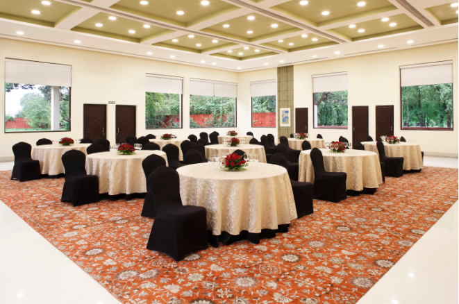
Madin Hotel
On a bustling tree-lined road, this sleek hotel is 2 km from Varanasi train station and 5 km from
the
18th-century Kashi Vishwanath Temple on the Ganges River.
Hotel Radisson
Occupying a grand building on 40 acres of landscaped gardens, this upscale hotel is 2 km from the
Varanasi Jn train station, 4 km from the landmark, riverside Kashi Vishwanath Temple .
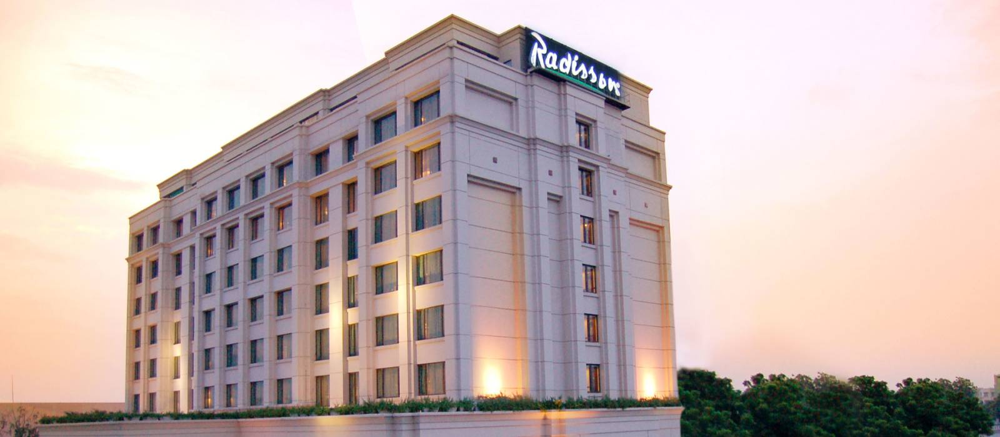
Surya Hotel
On a bustling tree-lined road, this sleek hotel is 2 km from Varanasi train station and 5 km from
the
18th-century Kashi Vishwanath Temple on the Ganges River.
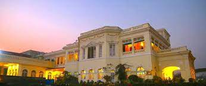